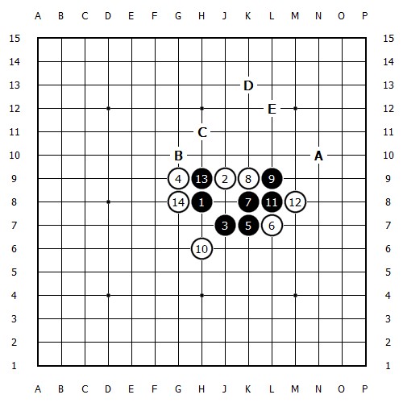

黑7错误，白棋只需要两手棋，就可以做出无法阻挡的优势。要利用黑棋禁手的弱点哦
7手A点更容易胜。现在来看这个7
通常走到这里黑棋会直接阻挡白6和白12手。那么黑棋1，7，11这个绵三要想再和其他黑棋有联系可就难了。
如图，黑棋13恰是时机，15控制住了白6和白12。

白14挡外面，黑棋15绕着圈子就能取胜。
黑棋AB都能取胜
黑棋AB都能取胜
白棋意图抓禁，黑棋护断之后，白棋无法展开，必败。
黑棋线路丰富，取胜完全没有问题

14位和15位。黑棋肯定能够抢到一个。
13之后，黑棋能利用冲棋甩开左边白棋的包围，必胜。 转自咒灵_的空间
这个变化没仔细拆过 居然也是必胜啊